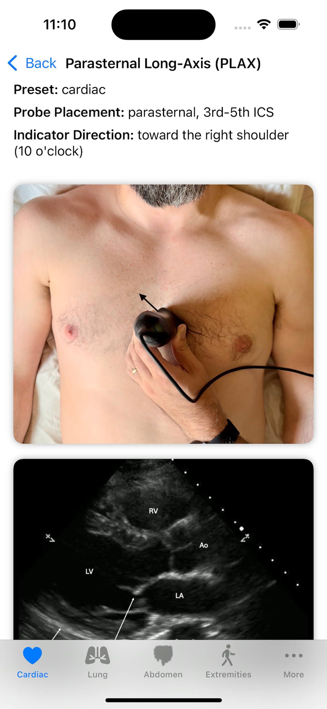

A bedside ultrasound reference built for clinicians and trainees.

Every view demonstrates proper probe positioning, labeled diagrams, and real ultrasound clips
Exact transducer placement, preset, and indicator direction for every view — with positioning photos so you start in the right spot.
Full-screen ultrasound loops you can play back to see normal anatomy and pathology.
Labeled reference images for each view so you can name every structure and spot the key landmarks.
Cardiac calculators to quickly compute essential echocardiographic metrics, such as ejection fraction, IVC collapsibility, and RV:LV ratio.
Log the studies you perform into a date-stamped portfolio that builds over time — stored privately on your device.
Sharpen interpretation with rotating teaching cases and immediate feedback on your read.
Pocket POCUS is created by practicing clinicians who scan at the bedside.